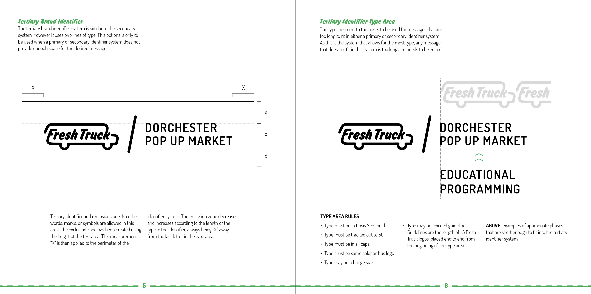

The logo evolved with iteration and exploration of what Fresh Truck means to the community.
Working on the Fresh Truck style guide was my first exposure to writing about how to use a sustainably use a system.
I discovered a love for crafting style guides while working on this project, particularly the page outlining what not to do.
Designing the outside of a bus was difficult but so much fun. Seeing my exact design applied to a huge physical object is still surreal. Photo by Ramin Kohanteb.
Fresh Truck is a retrofitted school bus that supplies fresh produce to communities throughout the city of Boston. Scout took on the rebranding in effort to create a clean brand that evokes nostalgia as well as communicates Fresh Truck's mission to support food access and community health. In rebranding Fresh Truck, we adopted the brand words "nostalgic," "clean," and "reputable." As a non profit that serves the city of Boston, it was important that Fresh Truck had appeal but was also trusted to serve fresh, clean, and quality produce. We began with an emphasis on local by incorporating the city skyline into logo sketches, which then evolves into a simplified bus. The final logo answers the question "what is Fresh Truck?" with a clean and recognizable bus silhouette and type treatment.All design in collaboration with teammates Amanda Yee, Benjamin Young, and Elise Fung.
Copyright 2020 Christina Allan